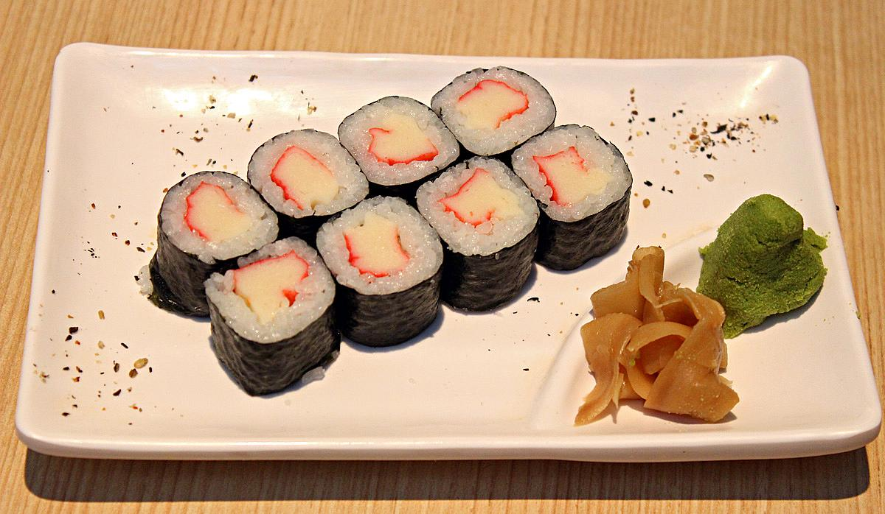
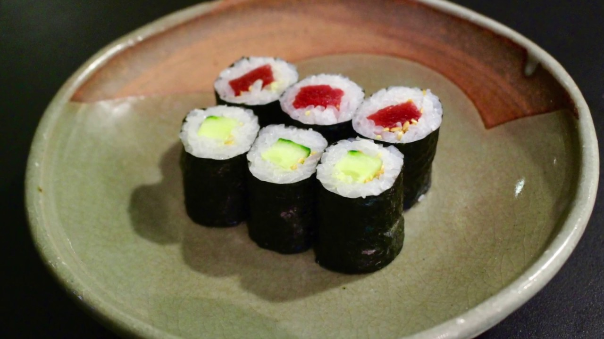
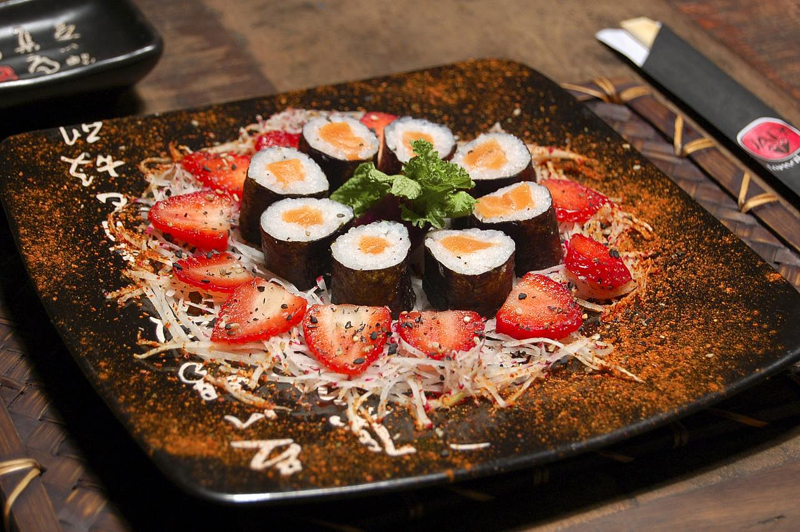
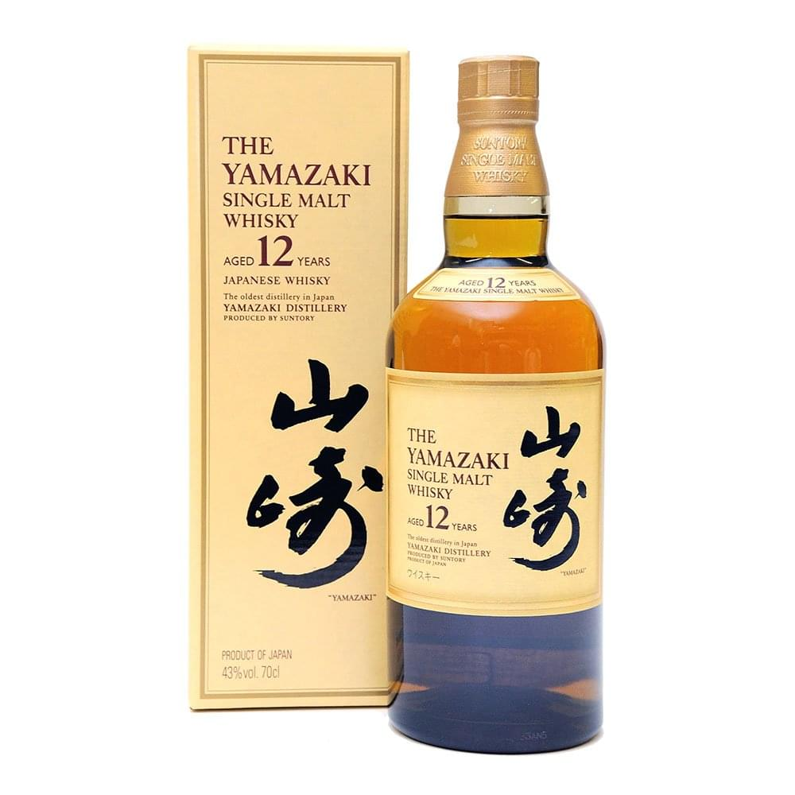
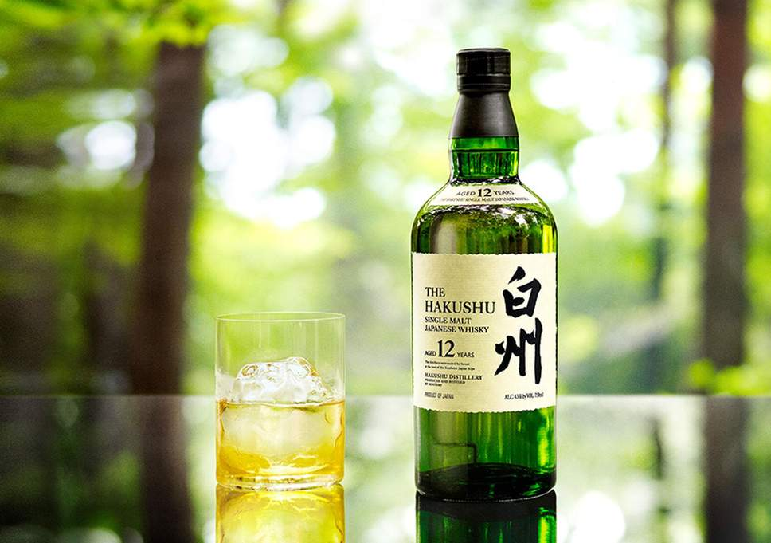

MAKIZUSHI

Makizushi is a cylindrical piece, formed with the help of a bamboo mat, generally wrapped in nori. Occasionally wrapped in a thin omelette, soy paper, cucumber, or shiso (perilla) leaves. Traditionally the makizushi is served in a tray of 8 pieces, it costs 20$(USD) per serving.
OSHIZUSHI

Also known as hako-zushi is a pressed sushi from the Kansai region, a favorite and specialty of Osaka. A block-shaped piece is formed using a wooden mold, called an oshibako. The chef lines the bottom of the oshibako with the toppings, covers them with sushi rice, and then presses the lid of the mold down to create a compact, rectilinear block. All the ingredients are either cooked or cured and raw fish is never used. Costs 35$(USD) per serving.
NIGIRIZUSHI

Nigirizushi consists of an oblong mound of sushi rice that the chef presses between the palms of the hands to form an oval-shaped ball, and a topping draped over the ball. It is usually served with a bit of wasabi; neta are typically fish such as salmon, tuna or other seafood. Certain toppings are typically bound to the rice with a thin strip of nori, most commonly octopus, freshwater eel, sea eel, squid, and sweet egg. One order of a given type of fish typically results in two pieces, while a sushi set may contain only one piece of each topping.
HIBIKI

Hibiki is a premium blended whisky produced in Japan by Beam Suntory. It is a premium-category product, and has won several awards. For producing the blends available as of 2010, more than 30 whiskies were used in the mix, including some that were aged more than 30 years and some that were aged in old umeshu casks. A bamboo charcoal filtering step has also been used. The company said the process gives it a very sweet and gentle flavor.
YAMAZAKI

Yamazaki distillery is a whisky distillery located in Shimamoto, Osaka Prefecture, Japan. Opened in 1923, and owned by Suntory, it was Japan's first commercial whisky distillery. Seven thousand bottles of unblended malt whisky are on display in its Whisky Library.Spirit ratings organizations, such as the Beverage Testing Institute and the San Francisco World Spirits Competitions, have reacted favorably to Yamazaki's offerings. Most notably, the 18-Year has earned six consecutive double gold medals at the San Francisco Spirits Competitions between 2008 and 2013. Yamazaki 25 Year Old was awarded Best Japanese Single Malt at the 2013 World Whisky Awards.